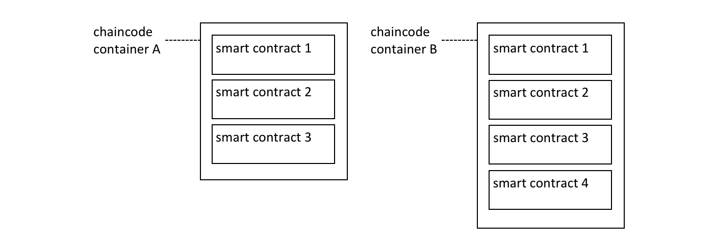

Contract names¶
Audience: Architects, application and smart contract developers, administrators
A chaincode is a generic container for deploying code to a Hyperledger Fabric blockchain network. One or more related smart contracts are defined within a chaincode. Every smart contract has a name that uniquely identifies it within a chaincode. Applications access a particular smart contract within an instantiated chaincode using its contract name.
In this topic, we’re going to cover:
- How a chaincode contains multiple smart contracts
- How to assign a smart contract name
- How to use a smart contract from an application
- The default smart contract
Chaincode¶
In the Developing Applications topic, we can see how the Fabric SDKs provide high level programming abstractions which help application and smart contract developers to focus on their business problem, rather than the low level details of how to interact with a Fabric network.
Smart contracts are one example of a high level programming abstraction, and it is possible to define smart contracts within in a chaincode container. When a chaincode is installed and instantiated, all the smart contracts within it are made available to the corresponding channel.
 Multiple smart contracts can be defined within a chaincode. Each is uniquely identified by their name within a chaincode.
In the diagram above, chaincode A has three smart contracts defined within it, whereas chaincode B has four smart contracts. See how the chaincode name is used to fully qualify a particular smart contract.
The ledger structure is defined by a set of deployed smart contracts. That’s because the ledger contains facts about the business objects of interest to the network (such as commercial paper within PaperNet), and these business objects are moved through their lifecycle (e.g. issue, buy, redeem) by the transaction functions defined within a smart contract.
In most cases, a chaincode will only have one smart contract defined within it.
However, it can make sense to keep related smart contracts together in a single
chaincode. For example, commercial papers denominated in different currencies
might have contracts EuroPaperContract, DollarPaperContract,
YenPaperContract which might need to be kept synchronized with each other in
the channel to which they are deployed.
Name¶
Each smart contract within a chaincode is uniquely identified by its contract
name. A smart contract can explicitly assign this name when the class is
constructed, or let the Contract class implicitly assign a default name.
Examine the papercontract.js chaincode
file:
class CommercialPaperContract extends Contract {
constructor() {
// Unique name when multiple contracts per chaincode file
super('org.papernet.commercialpaper');
}
See how the CommercialPaperContract constructor specifies the contract name as
org.papernet.commercialpaper. The result is that within the papercontract
chaincode, this smart contract is now associated with the contract name
org.papernet.commercialpaper.
If an explicit contract name is not specified, then a default name is assigned
– the name of the class. In our example, the default contract name would be
CommercialPaperContract.
Choose your names carefully. It’s not just that each smart contract must have a
unique name; a well-chosen name is illuminating. Specifically, using an explicit
DNS-style naming convention is recommended to help organize clear and meaningful
names; org.papernet.commercialpaper conveys that the PaperNet network has
defined a standard commercial paper smart contract.
Contract names are also helpful to disambiguate different smart contract transaction functions with the same name in a given chaincode. This happens when smart contracts are closely related; their transaction names will tend to be the same. We can see that a transaction is uniquely defined within a channel by the combination of its chaincode and smart contract name.
Contract names must be unique within a chaincode file. Some code editors will detect multiple definitions of the same class name before deployment. Regardless the chaincode will return an error if multiple classes with the same contract name are explicitly or implicitly specified.
Application¶
Once a chaincode has been installed on a peer and instantiated on a channel, the smart contracts in it are accessible to an application:
const network = await gateway.getNetwork(`papernet`);
const contract = await network.getContract('papercontract', 'org.papernet.commercialpaper');
const issueResponse = await contract.submitTransaction('issue', 'MagnetoCorp', '00001', '2020-05-31', '2020-11-30', '5000000');
See how the application accesses the smart contract with the
contract.getContract() method. The papercontract chaincode name
org.papernet.commercialpaper returns a contract reference which can be
used to submit transactions to issue commercial paper with the
contract.submitTransaction() API.
Default contract¶
The first smart contract defined in a chaincode is the called the default smart contract. A default is helpful because a chaincode will usually have one smart contract defined within it; a default allows the application to access those transactions directly – without specifying a contract name.
 A default smart contract is the
first contract defined in a chaincode.
A default smart contract is the
first contract defined in a chaincode.
In this diagram, CommercialPaperContract is the default smart contract. Even
though we have two smart contracts, the default smart contract makes our
previous example easier to write:
const network = await gateway.getNetwork(`papernet`);
const contract = await network.getContract('papercontract');
const issueResponse = await contract.submitTransaction('issue', 'MagnetoCorp', '00001', '2020-05-31', '2020-11-30', '5000000');
This works because the default smart contract in papercontract is
CommercialPaperContract and it has an issue transaction. Note that the
issue transaction in BondContract can only be invoked by explicitly
addressing it. Likewise, even though the cancel transaction is unique, because
BondContract is not the default smart contract, it must also be explicitly
addressed.
In most cases, a chaincode will only contain a single smart contract, so careful
naming of the chaincode can reduce the need for developers to care about
chaincode as a concept. In the example code above it feels
like papercontract is a smart contract.
In summary, contract names are a straightforward mechanism to identify individual smart contracts within a given chaincode. Contract names make it easy for applications to find a particular smart contract and use it to access the ledger.